꽃냉장고
꽃냉장고 맞춤제작, 매장 벽에 맞춰 설계하는 순서
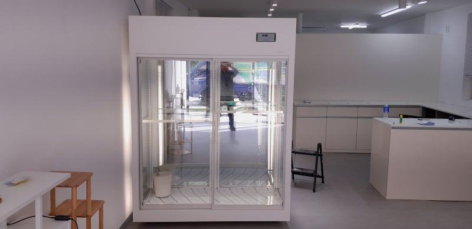
꽃냉장고 맞춤제작은 벽 폭에 몇 개의 버킷을 세울지, 꽃 종류에 따라 온도대를 나눌지, 문을 어느 쪽으로 열지를 먼저 정하는 데서 시작합니다. 여기에 모터 먼지 청소와 배수관 점검을 쉽게 할 수 있는 구조까지 설계 단계에서 넣어 두면 오래 써도 성능이 덜 떨어집니다.
안녕하세요. 생화 매장에 맞춘 꽃쇼케이스를 직접 설계하고 만드는 한성쇼케이스입니다.
꽃집 매장은 모양이 제각각입니다. 좁고 긴 상가, 통창이 넓은 1층 코너, 작업실을 겸한 공방형 매장까지 다양하죠.
그래서 기성 꽃냉장고를 들이면 벽 한쪽이 애매하게 남거나 작업대와 부딪히는 일이 생깁니다.
맞춤제작을 결심하셨다면 다음 고민은 "무엇을 정해서 알려 드려야 하나"일 겁니다. 생화는 살아 있는 상품이라 크기만 맞춘다고 끝나지 않고, 꽃이 숨 쉬는 환경까지 설계에 담겨야 합니다.
오늘은 꽃냉장고를 매장에 맞춰 만들 때 어떤 순서로 무엇을 정하면 좋은지, 그리고 설치 뒤 오래 쓰기 위해 설계 단계에서 챙길 부분을 함께 정리해 드리겠습니다.
1. 벽 폭과 버킷 개수
가장 먼저 설치할 벽의 폭과 천장 높이를 잽니다. 그리고 평소 쓰시는 버킷의 지름과 높이, 성수기에 동시에 세워 둘 버킷 수를 세어 보세요.
이 두 숫자가 나오면 내부 폭과 칸 구성이 거의 정해집니다.
버킷을 너무 빽빽하게 세우면 공기가 돌지 못해 구석 꽃부터 상합니다. 꽃 사이로 바람이 지나갈 여유를 남기는 것까지 계산해 칸을 나누는 게 맞춤제작의 핵심입니다.
- 설치 벽의 폭과 천장 높이를 재 두세요.
- 주로 쓰는 버킷 지름과 높이를 알려 주세요.
- 성수기 기준 동시에 세울 버킷 수를 세어 보세요.
2. 꽃 종류별 온도대
일반 절화는 5℃에서 8℃ 사이가 보편적이지만, 난류나 열대 식물은 10℃에서 13℃ 정도가 맞고, 출고 직전 꽃은 3℃에서 5℃로 잠시 낮춰 개화를 늦추기도 합니다.
매장에서 다루는 꽃의 비중에 따라 칸을 하나로 갈지, 둘로 나눌지가 갈립니다.
웨딩이나 행사 꽃을 미리 받아 두는 매장이라면 출고 대기 칸을 따로 두는 것도 방법입니다. 판매용과 보관용을 나누면 문을 여닫는 횟수도 분산돼 온도가 덜 흔들립니다.

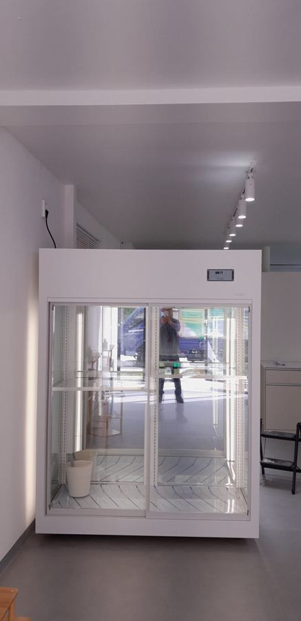
3. 냉각 방식과 습도
생화에는 찬 바람을 직접 쏘지 않고 내부를 감싸듯 순환시키는 간접 냉각 방식을 적용합니다. 냉각기 바람이 꽃잎에 바로 닿으면 세포 조직이 상해 갈변이 생기기 때문입니다.
습도도 함께 지켜야 합니다. 일반 냉장고처럼 내부를 건조하게 유지하면 꽃잎이 수분을 빼앗겨 금방 말라 버립니다.
맞춤제작이라면 냉각기 위치와 바람길을 꽃 배치에 맞춰 잡을 수 있다는 점이 큰 장점입니다.
4. 문 방식과 작업 동선
꽃을 꺼내 바로 다듬고 포장하는 매장이라면 작업대 쪽으로 문이 열리게 하는 게 편합니다. 손님에게 보여 주는 면과 사장님이 꺼내는 면을 따로 둘지도 이때 정하세요.
통창 쪽에 설치한다면 햇빛이 유리에 오래 닿는 시간대를 확인해 두세요. 햇빛이 드는 면은 단열과 유리 사양을 달리하거나 위치를 조금 옮기는 것만으로도 내부 온도 유지가 수월해집니다.
5. 청소와 배수를 쉽게
쇼케이스 상단이나 하단에는 온도를 조절하는 모터가 있는데, 여기에 먼지가 쌓이면 기계가 과하게 돌아 전기도 많이 쓰고 설정 온도까지 잘 내려가지 않습니다.
한 달에 한 번은 부드러운 브러시나 청소기로 털어 주셔야 하니, 손이 닿기 쉬운 위치로 설계하는 게 좋습니다.
꽃집은 잎사귀와 꽃잎이 배수 라인을 막는 일이 잦습니다. 배수구에 거름망을 두고 점검구를 열기 쉽게 만들어 두면 여름철 물 고임과 잔고장을 줄일 수 있습니다.
- 모터 쪽 먼지 청소 위치를 설계 때 확인하세요.
- 배수구 거름망과 점검구를 요청하세요.
체크리스트
- 설치 벽 폭·천장 높이 실측
- 버킷 크기와 성수기 버킷 수
- 꽃 종류별 온도대와 칸 분리 여부
- 간접 냉각과 습도 유지 구조
- 문 방향과 작업대 위치
- 모터 청소·배수 점검 접근성
현장에서 자주 보는 경우: 어제 들어온 꽃이 유독 빨리 시들 때
"분명 어제 시장에서 받은 싱싱한 꽃인데 왜 벌써 고개를 숙일까요?" 이런 연락을 받고 매장에 가 보면 몇 가지가 겹쳐 있는 경우가 많습니다.
냉장고라면 차가울수록 좋다고 생각해 온도를 너무 낮춰 꽃잎에 냉해가 생겼거나, 반대로 설정보다 실제 온도가 높아 꽃이 빨리 피어 버린 경우입니다.
실제 온도가 설정과 다르게 나오는 원인을 따라가 보면 모터 주변에 쌓인 먼지, 잎사귀로 막힌 배수 라인이 자주 나옵니다.
꽃을 너무 빽빽하게 넣어 공기가 돌지 못하는 경우도 있습니다. 평균 온도를 7℃ 안팎으로 유지하고, 먼지와 배수만 주기적으로 관리해도 생화가 버티는 기간이 눈에 띄게 달라집니다.
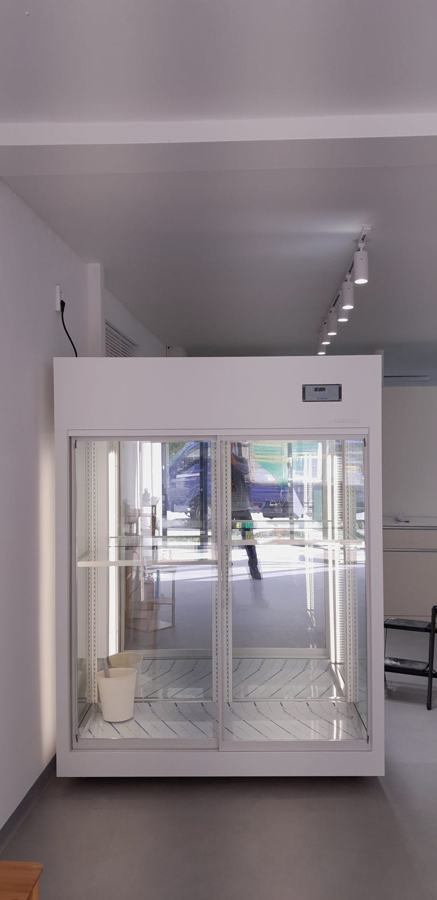
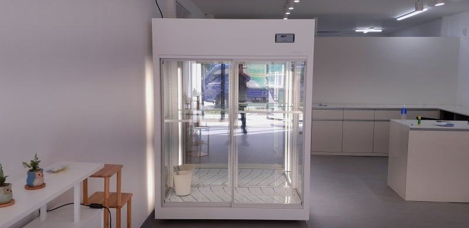
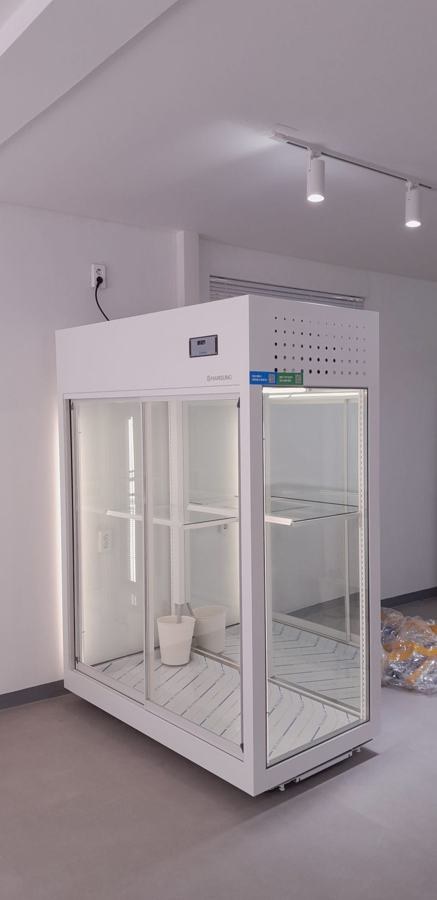
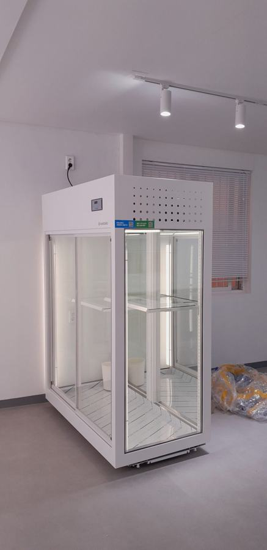
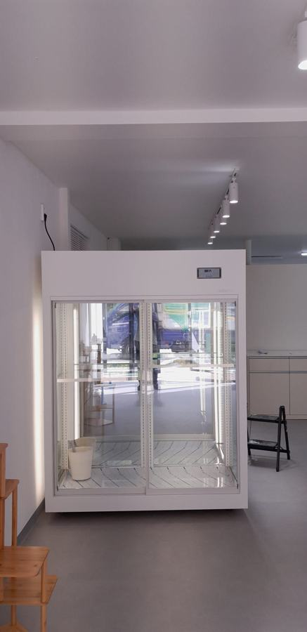
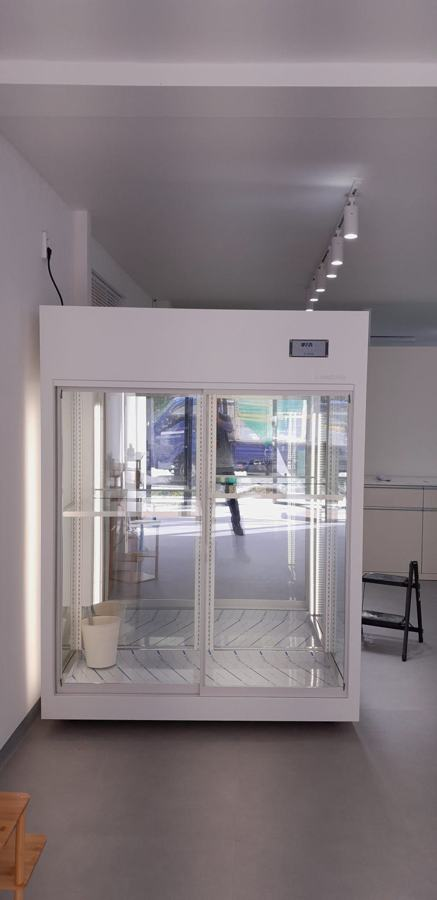
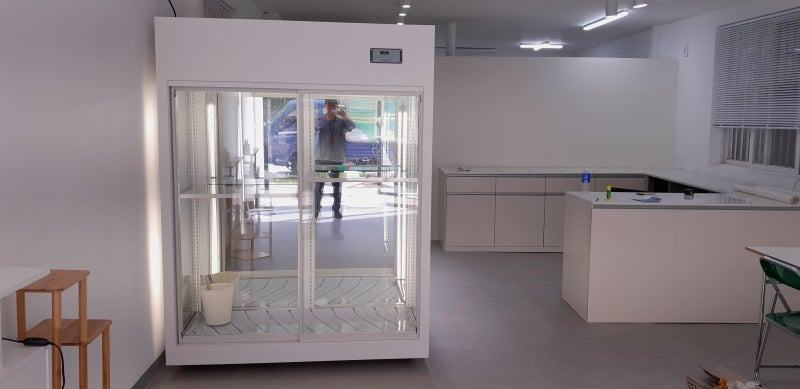
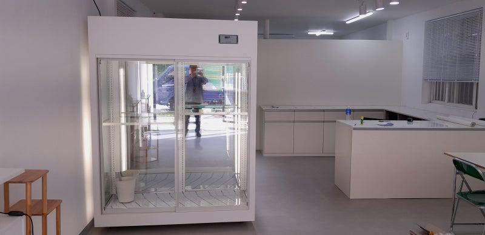
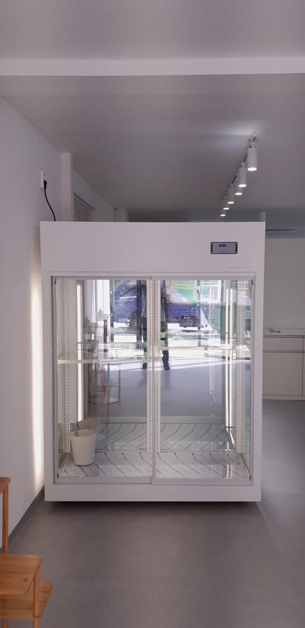

| 구분 | 권장 온도 범위 | 주요 특징 및 관리 팁 |
|---|---|---|
| 일반 절화 | 5℃ ~ 8℃ | 가장 보편적인 설정값으로, 대다수의 생화에 적합 |
| 열대 식물 및 난류 | 10℃ ~ 13℃ | 낮은 온도에서 냉해를 입기 쉬우므로 주의 |
| 장기 보관 및 출고 전 | 3℃ ~ 5℃ | 출고 전 일시적으로 신진대사를 억제할 때 |
자주 묻는 질문
작은 꽃집도 꽃냉장고를 맞춤으로 만들 수 있나요?
네, 작은 매장일수록 벽 폭에 딱 맞춰 만드는 이점이 큽니다. 버킷 수와 작업대 위치를 알려 주시면 남는 공간 없이 구성을 잡아 드립니다.
한 대 안에서 온도를 다르게 둘 수 있나요?
칸을 나눠 설계하면 구역별로 운용할 수 있습니다. 다루는 꽃의 비중을 알려 주시면 칸을 나누는 게 나을지, 따로 두는 게 나을지 함께 판단해 드립니다.
설치 후 관리는 어떻게 하면 되나요?
한 달에 한 번 모터 쪽 먼지를 털고, 배수 라인에 잎사귀가 끼지 않았는지 확인해 주세요. 그래도 온도가 맞지 않으면 전국 240여 개 A/S 센터를 통해 점검을 요청하시면 됩니다.
매장 조건에 맞춰 만드는 한성쇼케이스
원하시는 제품 사진과 설치할 공간 사진만 보내 주셔도 매장에 맞는 구성을 추천해 드립니다.
- 전국 240여 개 A/S 전담 센터 운영
- 본사 대량 자재 매입으로 품질 대비 합리적인 가격
- 유럽제·삼성 냉각 콤프레셔 적용
- 국내 최초 쇼케이스 전문 디자이너 상주
매장 폭과 원하는 진열 구성을 알려 주세요. 실측과 견적을 안내해 드립니다.
031-986-2458